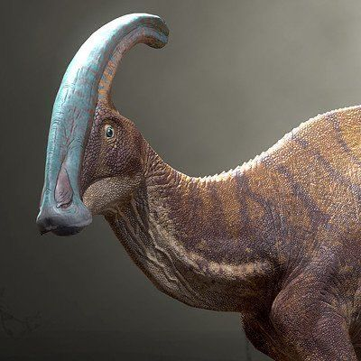

Comunicação & Acústica
PARASSAUROLOFO
Crista Craniana
Até 1,8m de Tubo Ósseo
Comprimento Total
9 a 10 Metros
Massa Corporal
2,5 a 4 Toneladas
Locomoção
Bípede e Quadrúpede
Crista Ressonante: A longa crista oca em sua cabeça funcionava como um instrumento de sopro natural. Canais nasais internos percorriam todo o interior do tubo ósseo, permitindo amplificar bramidos graves capazes de ecoar por quilômetros na floresta.
Comunicação Social: Utilizava essas vocalizações de baixa frequência para manter o bando unido, alertar sobre predadores e atrair parceiros. Além disso, alternava facilmente entre quatro patas para pastar e duas para correr em alta velocidade.
